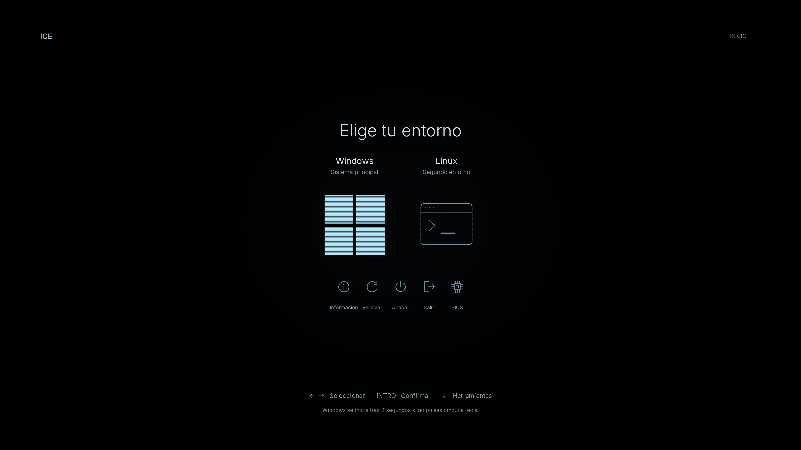

Descargar ICE v1.0.0 · Código en GitHub

Usa ← → para cambiar de selección, ↓ para ir a herramientas y ↑ para volver a los sistemas. Los botones solo muestran capturas: no ejecutan ninguna acción.
Capturas reales de rEFInd 0.14.2 en una máquina virtual. La vista previa no demuestra compatibilidad con el firmware de otro equipo. Las entradas Windows/Linux son ejemplos: cada persona debe configurar sus cargadores. No se incluyen sistemas operativos ni herramientas de recuperación.